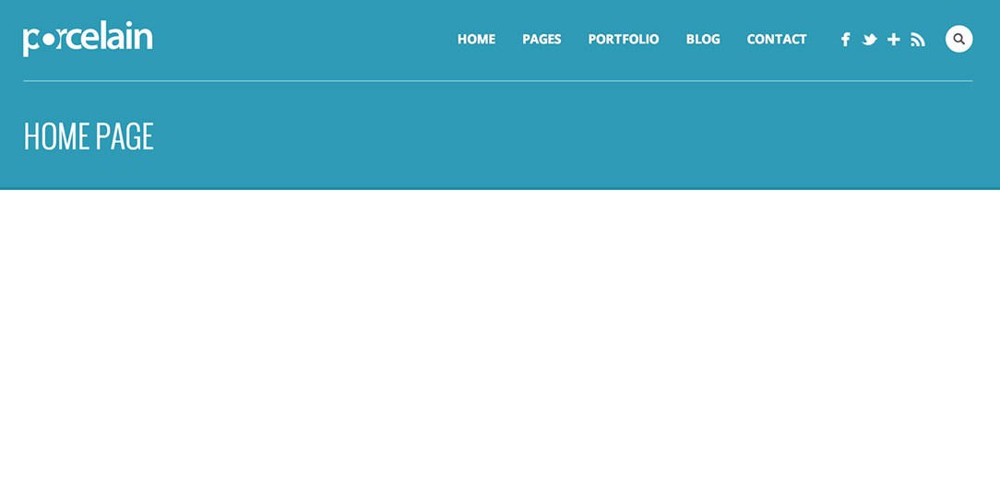
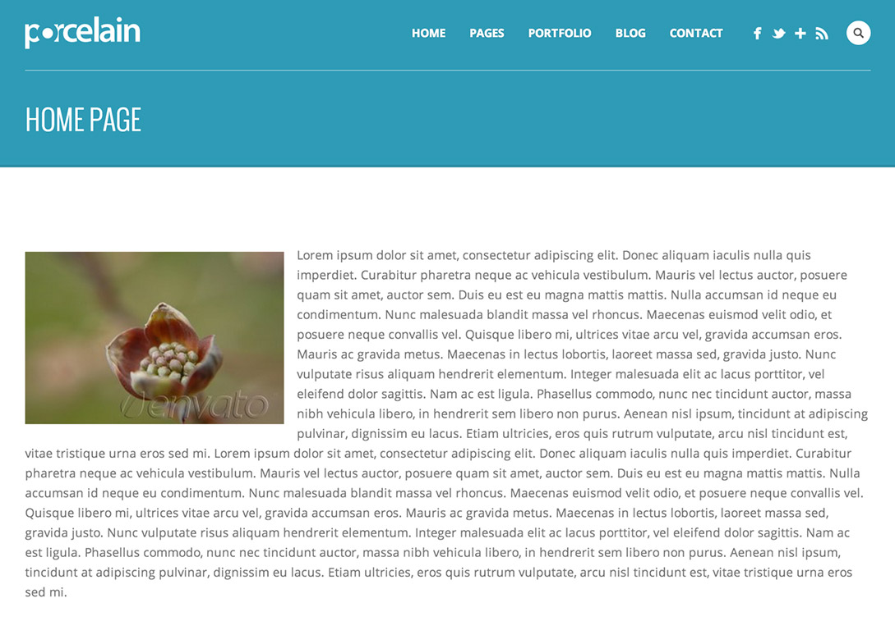
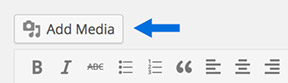
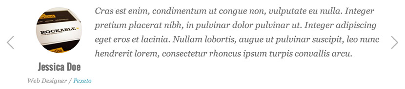

“Porcelain WordPress Theme” Documentation by “Pexeto” v.1.3.5
Created: 23 October 2013
By: Pexeto
http://pexetothemes.com/
Thank you for purchasing Porcelain theme. If you have any questions that are beyond the scope of this help file, please refer to the Support section. Thanks so much!
If you like this theme, please don't forget to rate it on the ThemeForest site. Thank you!
Note: If you have any questions that are beyond the scope of this help file, please refer to the Support section.
1. Getting Started
a. If you are new to WordPress
Although building a website with WordPress is significantly much easier than coding it by yourself,
if you are a beginner, even working with WordPress may be difficult to you. That's why, in this section we will
provide some useful links and also will explain how to get oriented in the documentation and what pattern to
follow when building your website with our theme.
Please note that this documentation covers all the main settings for the theme, but it doesn't cover
instructions about working with WordPress, as this is a very extensive topic. If you are new
to WordPress, we would recommend to first get familiar with the WordPress system, so you can have
at least basic knowledge about how it works and then proceed with setting the theme.
Working with WordPress - Useful Links
- The WordPress Codex - the official WordPress manual containing lots of information and tutorials about working with WordPress.
- WP101 Basics Training - the perfect beginning spot for those just getting started with WordPress. The video tutorials provided are very helpful to easily understand how WordPress works.
b. Working with the theme
Once you have some basic WordPress knowledge, you are ready to go with setting the theme. Here are some example steps about how you can do this:
- Install and activate the theme - read about how to do this in the Installing and activating the theme section.
Having problems with installing the theme?
» Refer to the "Fail to install the theme" subsection of the Troubleshooting section. - Change your logo - learn how to do this in the Changing the logo section
- Create your basic menu - during the process of setting your theme, you will be changing your menu links all the time. However, it is good to start with having the main menu set. Learn how to set your menu in the Setting the menu section.
- Start with creating your content
You can create all the content by creating your pages one by one. Here are some examples of what steps to follow when creating different pages:
If you need a full-width custom home page:- Go to Template pages » Home Page - Full-width custom page template section to learn how to create the page and how to add elements to it.
- You need to set a slider for that page? » Go to the Sliders section to read how to create a slider. After you have your slider created and populated with images, you have to select the slider you have created for the page (how to set the slider is explained in both the slider's section and the full-width custom page template section)
- Go to Template pages » Blog page section to learn how to create a blog page, how to create posts to it and all the settings you can do for this page
- You need to set a slider for the blog? » Go to the Sliders section to read how to create a slider. After you have your slider created and populated with images, you have to select the slider you have created for the page (how to set the slider is explained in both the slider's section and the blog page section)
- You need a separate blog sidebar? » Go to the The sidebars section to learn how to create additional sidebars and how to add widgets to them. After you have created your sidebar, go back to the Blog page section to learn how to set the sidebar you have created to your blog page.
Basically, these are the steps you have to follow - when you need to create a page, just go to its corresponding subsection of the Template pages section and read about how to create it and what settings you can do for the page. The main key about understanding how the theme works is to read the documentation we have provided carefully, as we have explained everything you need to know about the theme in here.
- Once you follow all these steps and have the basic theme setup, you can also check the rest of the sections of this documentation to read more about the other features that our theme provides.
We hope you will enjoy working with the theme!
2. Installing and activating the theme
There are 2 main ways to upload the theme:
- Via the built in WordPress theme uploader
You can read the instructions about installing a theme via the WordPress uploader below, but you can also watch the "Installing a Pexeto Theme via WordPress Uploader" video here
First you have to unzip the download file and find the zip file called porcelain.zip. After this you have to go in the admin panel » Appearance » Themes, click on the Install Themes tab and then click on the "Upload" tab (located in the top section of the page). After you click the "Upload" tab, a new page will be opened where you will be asked to find the .zip file on your local file system.
Note: Some servers have limited folder access settings applied and wouldn't allow uploading the theme trough the admin - in these case you have to upload the theme via FTP. - Via FTP client
You can read the instructions about installing a theme via FTP below, but you can also watch the "Installing a Pexeto Theme via FTP" video here
If you know the FTP login details of the server where your site is hosted and you have a FTP client installed (such as FileZilla), you might consider using this way of uploading your theme. First you have to unzip the download file, find the zip file called porcelain.zip, unzip it and upload the folder to the main WordPress installation folder » wp-content » themes. Please note that if you prefer this way of installation, you have to make sure that the main files of the theme are contained just within one folder of the themes folder. The right way to locate your root theme files is for example themes/porcelain but not themes/porcelain/porcelain.
You can activate the theme after it is uploaded on the server. In order to activate this theme you have to go to the admin panel » Appearance » Themes. In this section you should see the theme with a title Porcelain by Pexeto. Just click on the Activate button and your theme should get activated.
-WordPress v.3.9 or higher
-PHP v.5.0 or higher
3. Useful instructions back to top
a. Options page
When you activate this theme, an options page that contains global theme settings is created. This page is located in the admin panel » Porcelain » Porcelain Options.
b. Page Settings section
We have also added a custom settings section for the pages/posts where you can apply custom settings for each single page and post and these settings won't be applied globally to the theme. This settings section is located below the main content editor of the page/post opened it edit mode. For example, in the pages this section is called "PORCELAIN PAGE SETTINGS".
c. Setting a featured image to a post/page
In order to set a thumbnail (featured image) to a post/page, when creating/editing your post/page in the bottom of the right sidebar
you will see a link "Set a Featured Image":
If you click on this link, a window will be opened where
you can choose the image. When you select the desired image, you have to click on the "Set featured image"
link.
4. The header back to top
The header consists of four main elements:
- Logo
- Menu
- Social Network Icons
- Search field
a. Changing the logo
To change the logo image, you can either use your own existing logo image or edit the included logo PSD file - it is called logo.psd and is located within the PSD folder.
After you have your logo image, you have to go to the Porcelain Options » General Settings » Main » Logo
and upload (or insert the image URL) in the Logo Image section. If you would like to have
a sharp logo image on retina displays, the image uploaded should be twice bigger than its
display size - for example if the standard logo image size is 30x70 pixels, the image size of the
uploaded image should be 60x140 pixels.
The default logo image width is 133 pixels and the height depends on the
original image ratio. If you would like to apply custom width or height to the
logo image, you can do this in the "Custom logo width" and "Custom logo height" fields.
b. Setting the menu
When you fisrt install the theme, the menu will contain all the pages created and it sets drop-downs when there is a parent/child hierarchy created within the pages. However, we would recommend building your custom menu by using the WordPress Custom Menus functionality, as it is more flexible and very easy to work with. To learn how to create a WordPress Custom Menu, you can follow the instructions below.
Here are the steps you have to follow in order to set the menu:
- Go to Appearance » Menus. To create the menu click on the
"Create a new menu" link.
- After you create the menu, you can
add Page, Category and custom links from the left sidebar.
- Then click on the "Manage Locations" tab section and select the menu that you have created
in the "Porcelain Theme Main Menu" field.

c. Setting the social network icons
To set the icons, you have to go to Porcelain Options » General Settings » Social » Header Social Icons section.
You can add
the icons you like into the "Add a social icon" field:
1. Select the icon
2. Insert the link of the icon in the "Social Link" field
3. Insert a hover title (optional) - this title will be displayed when you hover the icon with the mouse
4. Click on the "Add Icon" field to add the icon
Note: Don't forget to click on the "Save Changes" button after you finish setting the Social Icons section.
d. Header search field
The header search field can be enabled/disabled in the Porcelain Options » General Settings » Main » Display Search in Header field.
e. Changing the default background color and image
You can set a custom background image and background color to the header section:
There are two ways to apply these settings:
- Globally for all the pages - the color you set in the Porcelain Options » Style Settings » Accent Color fields will be set as a header color for all the pages. You can also set a background image for all the pages in the Porcelain Options » Style Settings » Header background image field.
- Custom for each page - you can apply a custom background color and background image
for each page in the Header Background field of the settings section of the page:
You can also apply an overlay background to the header section to improve the readability and visibility of the menu links and the other elements, especially when using light images.
You can enable this overlay background in the Porcelain Options » Style Settings » Set a dark transparent background to the top header field.
f. Setting a sticky header
The sticky header is enabled by default, you can enable/disable it in the Porcelain Options » General Settings » Main » "Sticky Header" field. When enabled the header will be always displayed in the top section of the window, even after the user scrolls down the page.
g. Showing/hiding the page title
The page title is always displayed by default
There are two ways to set whether to show it or not:
- Globally for all the pages you can select whether to show the pages title in the Porcelain Options » Post & Page Settings » Pages » Display page title field.
- For each page in the Display Page Title custom field of the page. By default this field is set to apply the globally selected option, but you can also select the "Show" or "Hide" option for the page specifically.
5. The footer back to top
The footer consists of three main sections:
- Call to action section
- Widgetized area
- Copyright and footer menu section
a. Call to action section
The "Call to action" section looks like this:
All the settings for this section can be applied in the Porcelain Options » General Settings » Footer » Call to action section:
- You can enable/disable this section in the "Show call to action section above footer columns" field
- You can insert all the settings for the section such as title, description, button text, etc. in the other fields below
- If you are using the theme in multiple languages you can enable the "Use texts for this section from translated PO file(s)" option and set these texts within the PO file included instead of the options panel. For more information about theme translation you can refer to the Translation section.
b. Widgetized area
The widgetized area looks like this:
In the Porcelain Options » General Settings » Footer » Footer Layout field you can select the layout for the widgetized area. You can either select the number of columns that this area will contain or you can disable the widgetized area by selecting the "No widgetized footer" option.
If you select to display a widgetized area, you can then go to "Appearance" -> "Widgets" to add widgets to the footer. If, for example you have selected a "Three columns" layout, in the Widgets section you will see three widget areas called "Footer Column One", "Footer Column Two" and "Footer Column Three". After this you can drag and drop widgets from the left to any of these three boxes.
You can learn more about working with WordPress widgets in this video tutorial.
c. Copyright and footer menu section
The copyright and footer menu section looks like this:
The copyright text section by default displays your blog name.
Setting the footer menuHere are the steps you have to follow in order to set the footer menu:
- Go to Appearance » Menus and create a new menu. After you create the menu, you can add Page, Category and custom links from the left. You can watch this video to tutorial to learn more about working with the WordPress Menus functionality.
-
To set the menu, click on the "Manage Locations" tab section and select the menu that you have created in the "Porcelain Theme Footer Menu" field.

6. The sidebars back to top
This theme supports multiple sidebars and they are all dynamic. This means that you can insert whatever widgets you like on them.
There is one default sidebar that goes to each of the pages. If you would like to have more sidebars than the default one, then you can create your new sidebars in Porcelain Options » General » Sidebars section:
To customize your sidebars you have to go in the admin panel » Appearance » Widgets. There you should see your sidebars on the right part of the page. Now you can drag and drop widgets from the left into your sidebars. You can learn more about working with WordPress widgets in this video tutorial.
Here is an example of a sidebar:
You can assign a custom sidebar to each page in the "Page sidebar" field of the Page Settings section.
7. Sliders back to top
a. Content Slider
The Content Slider looks like this:
In addition to the instuctions in this documentation, you can also watch the "Creating a Content Slider" video in the Creating a Home page with Porcelain article.
In order to add slides to this slider you have to go to the Porcelain » Content Slider section. For each slide there are different options that you can apply.
-
Selecting the slide layout
You can select the silde layout in the "Slide Layout" field. You can choose between "Centered text", "Image with text on the left", "Image with text on the right", "YouTube video with text on the left" and "YouTube video with text on the right". Here are examples of how each of these options looks like:
Centered Text:
Image with text on the left:
Image with text on the right:
YouTube video with text on the left
YouTube video with text on the right
- In the Slide Animation field you can select the animation direction for the slide elements and you can set custom background and text color in the Custom Slide Background Color and Custom Slide Text Color fields
- Setting a background image
If you want, you can also set a background image to the slide in the Background Image URL field. You can also set the background image opacity in the Background Image Opacity field.
- Setting the main image
You can set a main slide image when one the "Text on the left" or "Text on the right" layouts is selected for the slide - this image is displayed on the side of the text. You can set this image in the Main image URL field.
You can also set the slide without this image, it will look like this:

- Custom Background Settings - to each slide you can apply some custom background settings, such as:
- Background Image Alignment - please note that the alignment is not fixed and the visible image area still depends on the screen size and ratio
- Background Style - select the way the background image is displayed:
- Parallax Cover - covers the visible area of the slider with a parallax effect. When the parallax effect is applied, the background image will be resized to cover the entire window size as well, that sometimes (depending on the screen and image size) can make the image look a bit zoomed
- Cover - covers the visible area of the slider with no parallax effect.
- Contain - the image will be resized so that it fits within the slider area - it will be always fully visible with no hidden parts.
- In the rest of the fields below you can set some content to the slide, such as titles, description and custom buttons with links.
When you set all the slide data, just click on the "Add Item" button to add the slide.
Changing the slide order
Once you add the images, you can change their order by dragging and dropping the image container to the desired place. After you change their order, in order the new order to be saved, you have to click on the "Save Order" button that would appear right above the images:
Creating additional Content Sliders
If you would like to add a new slider with a different image set, you have to click on the "Add new Content slider" button located in the top section of the page and insert its name in the dialog box that will be displayed. After that a section for the additional slider images will be created so that you can set the new images to it.
Changing the slider options
You can change the default slider options such as setting automatic image resizing and changing slider speed in the Porcelain Options » Sliders » Content Slider section.
Default/optimal image sizes:
- Main (side) image: 569px × 320px . The image height can be changed in the slider options section.
- Background image: There is no specific default/optimal size for the background image - by default
the background image is always centered in the visible slider area and how it is displayed depends on the
user's browser window size and the default image ratio. It is
recommended to use images that are around 1000 pixels and not bigger than 1500 pixels in size,
so that the page loads faster.
Adding a slider to a page
You can select the name and type of the slider that you would like to display in a page in the "Page Slider/Header" field of the page settings section (located below the main content editor)
b. Nivo Slider
The Nivo Slider looks like this:
Adding images
In order to add images to this slider you have to go to the Porcelain » Nivo Slider section. All you have to do is to upload the selected image (or add its URL), fill the fields with the data you would like to display in the slider and press the "ADD" button. After that the image is automatically saved for the slider.
Changing the image orderOnce you add the images, you can change their order by dragging and dropping the image container to the desired place. After you change their order, in order the new order to be saved, you have to click on the "Save Order" button that would appear right above the images:
Creating additional Nivo Sliders
If you would like to add a new slider with a different image set, you have to click on the "Add new Nivo slider" button located in the top section of the page and insert its name in the dialog box that will be displayed. After that a section for the additional slider images will be created so that you can set the new images to it.
Changing the slider options
You can change the default slider options such as setting automatic image resizing and changing slider speed in the Porcelain Options » Sliders » Nivo Slider section.
Default crop image size: 1500px × 550px . The image height can be changed in the slider options section. Please note that although the images are set in static crop sizes, their display size depends on the browser window size, as the slider is always as wide as the window. Also, if the automatic image resizing is enabled, please make sure to upload images that are bigger than these dimensions, so that they can be cropped to the exact size. For more information about the image resizing, you can refer to the Automatic image resizing/cropping section.
Adding a slider to a page
You can select the name and type of the slider that you would like to display in a page in the "Page Slider/Header" field of the page settings section (located below the main content editor)
8. Template Pages back to top
a. The Default Page
When you create a new page from the Pages » Add New section, the "Default Template" is assigned to the page by default. The default page template is a standard page template that can be with a sidebar or full-width layout and can contain custom content.
Setting the page layoutFor this page you can select the layout to be Right Sidebar, Left Sidebar or Full Width. You can do this by setting the custom field Page Layout of the page:
Selecting a sidebar
By default this page template uses the Default Sidebar. If you would like to use another sidebar, you can create one in the Porcelain Options » General » Sidebars section and after that you can set the custom field Sidebar and select the sidebar that you have just created. To customize it you have to go to the Appearance » Widgets and find the selected sidebar. You can drag and drop widgets from the left into it.
Setting a slider/static image to the page:You can select the type of header on the page in the Page Slider/Header custom field of the page. In this field you can select between Nivo slider, Content slider, Static Header Image and None.
- If you select a slider, you can read about how to create and setup the slider in the
Sliders section.
- If you select a Static Image, you can set the static image by setting the image as a
Featured image. Here is explained how to do this.
Applying a custom background color and background image to the page header
You can read about how to apply a custom background color and background image to the page header in the Changing the default background color and image section.
b. Home Page - Full-width custom page template
A page with full-width custom page template can look like this:
You can add many sections with different backgrounds and add different elements to all of them.
In addition to the instuctions in this documentation, you can also watch the videos that we have created in the Creating a Home page with Porcelain article.
Creating The Page:
- Create a new page (Page » Add New)
- In the "Template" field (located in the right sidebar of the edit page section) select "Full-width custom page" template.
- If you would like to make this page a front page (to be opened by default when the site is visited) go to Settings » Reading » Front page displays » Select "A static page" and select the page that you have just created in the Front Page list:
Once you create the page, you will have a blank full-width page:
If you insert standard text content or other elements in the content editor of the page, it will be centered and look like a standard full-width page with no sidebar:
 Creating a background full-width sectionIn order to add a background full-width section to the Home page, you can use the "Background Section" button:
When you click the button a dialog with various options will be displayed:
Here are examples of all the default style options for the background section:
|
Light Background Style |
Light Background Style 2 |
|
Light Background Style 3 |
Dark Background |
|
Dark Background Style 2 |
Additionally you can set a background image to the section in the "Background Image" field and select its opacity in the "Background Image Opacity" field:
Adding elements to the page content and the background sections
In addition to the standard content, there are also many different predefined elements that you can add, such as:
- Services Boxes
- Portfolio Carousel
- Recent Posts Element
- Testimonials
- Call to action section
- Galleries
- etc.
Setting a slider/static image to the page:
You can select the type of header on the page in the Page Slider/Header custom field of the page. In this field you can select between Nivo slider, Content slider, Static Header Image and None.
- If you select a slider, you can read about how to create and setup the slider in the
Sliders section.
- If you select a Static Image, you can set the static image by setting the image as a
Featured image. Here is explained how to do this.
Applying a custom background color and background image to the page header
You can read about how to apply a custom background color and background image to the page header in the Changing the default background color and image section.
c.Blog page
Creating The Page:
- Create a new page (Page » Add New)
- Select the "Blog Page" option in the "Template" field (located in the right sidebar of the edit page section
- If you would like to make this page a front page (to be opened by default when the site is visited) go to Settings » Reading » Front page displays » Select "A static page" and select the page that you have just created in the Front Page list:
Selecting a layout for the page
You can set the page layout in the "Page Layout" field of the page settings section:
You can choose between the following options:
- Left sidebar
- Right sidebar
- Full-width - no sidebar
- Two columns - no sidebar, masonry layout
- Three columns - no sidebar, masonry layout
- Two columns with right sidebar, masonry layout
- Two columns with left sidebar, masonry layout
Selecting a sidebar
By default this page template uses the Default Sidebar. If you would like to use another sidebar, you can create one in the Porcelain Options » General » Sidebars section and after that you can set the custom field Sidebar and select the sidebar that you have just created. To customize it you have to go to the Appearance » Widgets and find the selected sidebar. You can drag and drop widgets from the left into it.
Excluding categories from the blog
You can exclude categories in the "Exclude posts from categories" field.
The categories that you uncheck will be excluded from the blog page.
Defining the number of posts on the blog
In the "Number of posts per page" field of the blog page settings section you can set the number of posts to display on that page.
Setting a slider/static image to the page:You can select the type of header on the page in the Page Slider/Header custom field of the page. In this field you can select between Nivo slider, Content slider, Static Header Image and None.
- If you select a slider, you can read about how to create and setup the slider in the
Sliders section.
- If you select a Static Image, you can set the static image by setting the image as a
Featured image. Here is explained how to do this.
Applying a custom background color and background image to the page header
You can read about how to apply a custom background color and background image to the page header in the Changing the default background color and image section.
Setting advanced blog paginationIn order to have advanced pagination enabled on your blog page (as on the screenshot above) you have to install the WP-Pagenavi plugin. You can read more about how to do it the section Plugins included.
The blog posts
Selecting a format for the post
The posts support the following formats: Standard, Gallery, Video, Aside and Quote.
The format can be selected in the "Format" section of the post:
Here is an explanation about each of the supported formats:
- Standard - includes a featured image in the beginning of the post. It looks like this:
You can read here about how to set a featured image to the post. - Gallery - displays the image attachments of the post in a slider
in the beginning of the post. It looks like this:
Adding images In order to add images as attachments to the post you have to click on the "Add Media" button located above the content editor of the post:

then upload the images in the dialog window that is opened. All the images that you upload from the post will automatically become attachments of the post. You don't have to insert the images into the content of the post, they only have to be uploaded from this post's media window. If later you would like to edit these images, you can again click on the "Add Media" button and then you have to select the "Uploaded to this post" option in the filter:
You can also apply different slider settings, such as animation settings, image resizing, etc. in the Porcelain Options » Slider Settings » Slider as post gallery section. - Video - will display a video as header of the post. It looks like this:
You can set the video URL in the "Video URL" custom field of the post. The theme uses the WordPress [embed] shortcode to insert the video, you can see the supported formats on the WordPress Embeds page. We have also included support for Flash videos (with .swf extension). - Aside - displays a box with text only (the content of the post). It
doesn't include any post information, such as titles, images, etc. It looks like this:
- Quote - displays the post content in a quote style. It looks like this:

Just before the text that you want to be hidden you have to click on the "Insert more tag" button (Alt+Shift+T):
Enabling threaded comments (with reply functionality):
In order to enable threaded comments, you have to go to Settings » Discussion and check the field "Enable threaded (nested) comments x levels deep"
Post Options
There is a blog posts option included in the Porcelain Options » Post and Page settings » Blog Posts section. In this section you can set some options such as selecting the default single post layout, single post sidebar what info to display for the post (e.g. date, category, etc.).
d. Portfolio Gallery Page
The Gallery page looks like this
Main setup instructionsIn this section are included the main steps you would have to follow in order to set this page, more options and settings are described in the "Other Gallery Page Options" section below.
Creating The Page:- Create a new page (Page » Add New)
- Select "Portfolio Gallery" in the "Template" field (located in the right sidebar of the edit page section
- If you would like to make this page a front page (to be opened by default when the site is visited) go to Settings » Reading » Front page displays » Select "A static page" and select the page that you have just created in the Front Page list:
Creating the portfolio/gallery items (adding images to the gallery)
Each of the images in the gallery represents a single Portfolio Item. For each of the portfolio items:
- Creating new items
You can create a new item in "Portfolio" » Add New section. You can set the title in the "Title" field of the item. - Add Images to the item
- Click on the "Add Media" button above the main content area of the portfolio item:
- Open the "Create Gallery" section. If you would like to upload new images click on the
"Upload Files" tab and upload the images. If you would like to add existing Media Library
images, click on the "Media Library" tab and select the images you like. After you select
the images, click on the "Create a new gallery" button.
- After this when you click on each image in the gallery, in its Caption field you can set a description to it. You can also change the default image order by dragging and dropping the images on different positions.
- When you finish editing the images Click on the "Insert Gallery" button. This will insert a gallery object into the content section of the portfolio item.
- Later if you would like to edit the images, click on the gallery object and click on its "Edit Gallery"
button:
- Click on the "Add Media" button above the main content area of the portfolio item:
- Setting the thumbnail of the item
By default the first image of the images you have added will be used as the item's thumbnail. If you would like to set another image as thumbnail, you have to set it as featured image to the item. You can read about how to set a featured image here.
As the images uploaded would be bigger, the thumbnail image will be resized automatically to the size in which it should be displayed. However, if you prefer to use your custom thumbnail image, you can set it in the "Custom Thumbnail URL" field of the item.
- Selecting the type of the item
Each portfolio item supports different formats in which it can be displayed. You can select the type of the item in the "Item Type" field:
Here is an explanation for each of the item type options:- Slider with side description / Full-width slider
These two options display the same type of content, but in a different layout. The slider with side description displays a slider of images and a description on the side and the full-width slider displays a full-width slider with a description located below it:
Slider with side description
Full-width slider
You can read about how to add the images to the slider in the "Add images" section above.
The slider description is the actual post content - the content that you insert in the portfolio post content editor area will be displayed as a description to the item.
Slider optionsYou can change the default slider options in the Porcelain Options » Slider Settings » Portfolio Slider section. In this section you can select whether the images to be automatically resized or not and select whether to display a related projects carousel below the slider and you can also customize the default carousel options.
- Lightbox
If you select this option the images of the item in the Grid Gallery will be displayed lightbox:

With this type selected, the single portfolio item page will automatically include a Quick gallery with option to open the images in lightbox. Setting a single preview image per itemBy default the lightbox items are designed to display albums of images - each items displays a set of images in the lightbox. However if you would like to have only one preview image per item and have all the lightbox images in the gallery page related in a group, so that when you click on the first item's image and then click on the "Next" arrow of the lightbox, the second item's image will be displayed, you can enable the "Make lightbox items preview images related to each other" option in the gallery page settings section.
- Standard Page
The item will be displayed in a standard page format. In the Porcelain Options » Post and Page Settings » Portfolio Posts section you can select the layout and sidebar for the page.
- Video with side description / Full-width video
Displays a video either in a full-width layout or with a side description. You can set the video URL in the "Video URL" custom field of the portfolio item. The theme uses the WordPress [embed] shortcode to insert the video, you can see the supported formats on the WordPress Embeds page. We have also included support for Flash videos (with .swf extension).
- Custom Link
The item will be linking to a custom link that you have set in the custom field "Custom Link URL" of the item
- Slider with side description / Full-width slider
Ordering the items in the gallery
You can select how the items will be ordered in the "Order items by" and "Order" fields of the gallery page settings section:
The default options are set to order the items by date in a descending order. This means that the newest items will be displayed first. You can also select the items to be ordered by "Custom order". In this case, you can set an order number to the portfolio item in its "Order" field. We have also created a Portfolio » Custom Order page where you can easily drag and drop the portfolio items to reorder them:
Other Gallery Page Options
The gallery page includes some customization options in its settings section which is located below the main content editor of the page.
- Exclude categories from the page
You can exclude categories in the "Exclude items from portfolio categories" field by unchecking the categories that you would like to exclude.
- Show/hide the category filter
You can disable/enable the category filter within the "Show portfolio category filter" field
- Set the number of items to be displayed per page
You can set the number of items that will be displayed per page in the "Number of portfolio items per page" field
-
Change the number of columns
You can change the number of columns in the "Number of columns" field
- Change the image layout
You can enable a Masonry layout in the "Masonry layout" field. If you enable this option, the images height will vary depending on the original image ratio and also the images will be positioned one below another by filling all the space. If the "Masonry layout" option is disabled, you can set the image height in the "Thumbnail image height" field.
e. Quick/Easy Gallery page
This is the default WordPress image gallery - the purpose of this gallery is to insert multiple images at once - you can very quickly create multiple galleries just for several minutes. Here is how the gallery looks like:
In order to create a quick gallery you have to:
- Create a new page (you don't have to set a page template to it)
- Click on the "Add Media" button above the main content area:
- Open the "Create Gallery" section. If you would like to upload new images click on the
"Upload Files" tab and upload the images. If you would like to add existing Media Library
images, click on the "Media Library" tab and select the images you like. After you select
the images, click on the "Create a new gallery" button.
- After this when you click on each image in the gallery, you can set a caption that will be displayed below the image thumbnail in the "Caption" field and also you can set a description that will be displayed in the lightbox preview in the "Description" field of the image.
- Use the "Gallery Settings" section to change the gallery settings:
In the "Link to" select "Media File" and in the "Gallery Columns" field select the number of columns you would like to display.
Click on the "Insert Gallery" button.
The quick gallery options section can be found in Porcelain Options » Media Settings » Quick Gallery section. For the different post types (post / page / portfolio) you can enable/disable the masonry layout and if the masonry layout is disabled you can set a default static height to the thumbnail images.
f. Contact Form page
The contact form page looks like this:
This page contains an AJAX contact form which visitors of your website can use to contact you.
To make one page contain a contact form you have to do some settings. When you create (or edit) your page, you should find the field Template and in it to choose the Contact form page option. After that immediately your page will contain a contact form.
Setting your e-mail addressYou can set the e-mail address to which to send the messages in the Porcelain Options » General Settings » Contact Form section.
Setting a sender e-mail addressYou can set the e-mail address to which to send the messages in the Porcelain Options » General Settings » Contact Form » Email sender field.
Yahoo has recently published a DMARC policy of reject, meaning that all the emails that are sent from Yahoo emails, but not from the Yahoo servers, should be rejected by the email providers. This means that if your site visitor sets a Yahoo email and this email is set as a sender, you may not be able to receive the email (depending on the email provider that you use to receive the messages). Therefore, please make sure to set your custom email address in this field (such as noreply@domain.com, non-Yahoo address), so that you can make sure that you will receive all the emails from Yahoo users.
Setting CAPTCHAHaving CAPTCHA enabled for your form will prevent sending spam emails by robots, just by printing an image with text and asking the user to fill the text from the image.
We have used the reCAPTCHA service. In order to enable reCAPTCHA for the theme you have to do the following settings:
- Select "ON" in the "Enable CAPTCHA" field of the Porcelain Options » General Settings » Contact Form
- Register an API key and set your generated public and private keys in the "reCAPTCHA Public Key" and "reCAPTCHA Private Key" fields of the Porcelain Options » General Settings » Contact Form.
You can very easily generate these keys here. After you click on the "Sign Up" button, you will be redirected to a page where you would need to have a Google account in order to log in. If you don't have a Google account, you can create one by clicking on the "Sign Up" button on the new page that is opened. After you log in, you will be able to generate the API keys for your site.
For this page you can select the layout to be Right Sidebar, Left Sidebar or Full Width. You can do this by setting the custom field Page Layout of the page:
Selecting a sidebar
By default this page template uses the Default Sidebar. If you would like to use another sidebar, you can create one in the Porcelain Options » General » Sidebars section and after that you can set the custom field Sidebar and select the sidebar that you have just created. To customize it you have to go to the Appearance » Widgets and find the selected sidebar. You can drag and drop widgets from the left into it.
Setting a slider/static image to the page:You can select the type of header on the page in the Page Slider/Header custom field of the page. In this field you can select between Nivo slider, Content slider, Static Header Image and None.
- If you select a slider, you can read about how to create and setup the slider in the
Sliders section.
- If you select a Static Image, you can set the static image by setting the image as a
Featured image. Here is explained how to do this.
Applying a custom background color and background image to the page header
You can read about how to apply a custom background color and background image to the page header in the Changing the default background color and image section.
g. Archive page
The archive page displays an archive of the blog posts by category, month and a list with the posts.
To create an archive page you have to create a new page (Page » Add New) and select the "Archive" option in the "Template" field of the page (located in the right sidebar of the edit page screen)
Setting the page layoutFor this page you can select the layout to be Right Sidebar, Left Sidebar or Full Width. You can do this by setting the custom field Page Layout of the page:
Selecting a sidebar
By default this page template uses the Default Sidebar. If you would like to use another sidebar, you can create one in the Porcelain Options » General » Sidebars section and after that you can set the custom field Sidebar and select the sidebar that you have just created. To customize it you have to go to the Appearance » Widgets and find the selected sidebar. You can drag and drop widgets from the left into it.
Applying a custom background color and background image to the page header
You can read about how to apply a custom background color and background image to the page header in the Changing the default background color and image section.
9. Elements back to top
a. Services boxes
There are 4 styles of services boxes included. Here are some examples:
| Default style |
Circle style |
Boxed Photo style
|
Boxed Icon style |
You can create the services boxes in the Porcelain » Services Boxes section.
By default there is a "Default" services boxes set created where you can add the boxes. For each box you can add a Title, Image, Link and Description:
You can create many different services box sets and include them in different sections of the pages and posts. To create a new Services boxes set just click on the "Add New Services Box Set" button in the top right section of the window.
Adding the Services Boxes to the page
In order to add a services boxes set to a page/post, just click on the "Insert Services Boxes" button from the editor buttons:
Then a dialog will be displayed where you can set the options for the services boxes set:
In this dialog you can set:
- The services boxes set to display. By default there is a "Default" set created, however if you would like to create additional sets of boxes, you can do this in the Porcelain » Services Boxes section, by clicking on the "Add a New Services Box Set" button (located in the top right section of the page)
- Services Layout - select the layout/style of the services
- In the "Number of columns" field you can select the number of boxes to display per row
- Parallax animation on display - if enabled, each of the services boxes will be animated with a parallax animation when the user scrolls to the services set.
- In the "Services title" field you can select the title for the services box set. If you insert a title, it will be displayed on above the boxes in the list style boxes and on the left of the boxes with the rest of the styles.
- In the "Services description" field you can select the description for the services box set. If you insert a description, it will be displayed on the left of the boxes
- If you would like to add a link (for example a "Read more" link) in the Description section of the services set, you can setup the link data in the "Description Link URL" and "Description Link Text" fields of the dialog.
b. Portfolio Carousel
The portfolio carousel displays a set of portfolio items. You can read about how to create portfolio items and all the options that you can set to them in the "Creating the portfolio/gallery items" section of the Portfolio Gallery template section.
You can insert a carousel anywhere in the content of your pages or posts by using the "Insert Portfolio Carousel" button of the editor buttons:
In the dialog that will be opened you can choose the portfolio category to display, set a title and setup the ordering options. The carousel will be added as a shortcode in the content of the post/page.
c. Recent Blog Posts Element
The recent blog posts element supports two main layouts:
Column layout - 2, 3 or 4 columns:List layout:
You can insert the blog posts element anywhere within the content of the pages or posts, by using the "Recent Blog Posts" button of the editor buttons:
Creating a Featured Posts section
You can create a Featured Posts section by following these steps:
- Create a Featured category
- Assign your featured posts to that category
- When inserting the Recent Blog Posts element, select your Featured category in the "Show posts from category" field.
d. Testimonial Slider
 Creating the testimonials
You can create the services boxes in the Porcelain » Testimonials section.
By default there is a "Default" services testimonials set created where you can add the your testimonials.
You can create many different testimonial sets and include them in different sections of the pages and posts. To create a new testimonials set just click on the "Add New Testimonials Set" button in the top right section of the window.
Adding the testimonial slider to the page
You can insert a testimonial anywhere within a page/post by using the "Testimonial Slider" button of the content editor buttons
In the "Select testimonials set" field you can select a specific set of testimonials to show on the testimonial slider.
e. Call to action circle
You can insert a call to action circle anywhere within a page/post by using the "Circle call to action section" button of the content editor buttons

Please note that this circle is with a static size and it is designed to fit short titles only.
f. Nivo slider in page/post content
You can insert a Nivo slider anywhere within a page/post by using the "Insert Nivo Slider" button of the content editor buttons
If you insert a Nivo slider into the content of a Full-width custom page template, the slider will be displayed in a full-width size, for the rest of the pages and posts, the slider will be set to fit the width of the content container element of the page/post.
You can create different sliders within the Porcelain Options -> Nivo Slider section. You can learn more about creating sliders in the Nivo Slider section.
You can also apply different options such as image cropping, animation settings, etc. in the Porcelain Options -> Slider Settings -> "Nivo in content" section.
g. Pricing Tables
Creating the Pricing Tables
You can create pricing tables in the Porcelain » Pricing Tables section.
By default there is a "Default" Pricing Table set created where you can add your Pricing Table items.
When adding a pricing table item you can make it highlighted by selecting the "Highlight" option in the "Item Style" field.
You can create many different pricing tables and include them in different sections of the pages and posts. To create a new Pricing Table just click on the "Add New Pricing Table" button in the top right section of the window.
Adding the pricing table to the page
You can insert a pricing table anywhere within a page/post by using the "Pricing Table" button of the content editor buttons
In the "Select a pricing table" field you can select a specific Pricing Table to show.
In the pricing table dialog you can also select the number of columns to set to the pricing tables and a custom highlight color.
h. Social Sharing Buttons
The theme includes sharing buttons for the main social network sites: Facebook, Twitter, Google+ and Pinterest . These buttons can be enabled on posts, pages, portfolio posts and portfolio post sliders.
You can configure the how and where the buttons will be displayed in the Porcelain Options » General Settings » Social » Social Sharing Buttons section.
i. Accordion
The Accordion looks like this:
You can add an accordion by using the Accordion shortcode:
[accordion][apane title="First Pane"]Pane One Content[/apane] [apane title="Second Pane"]Pane Two Content[/apane] [apane title="Third Pane"]Pane Three Content[/apane][/accordion]Note: Please make sure that all the shortcode tags are on the same line, but separated with at least a space, for example:
... [apane]Tab One Content[/apane] [apane]Tab Two Content[/apane] ...
j. Tabs
You can add a tabs element by using the tabs shortcode:
[tabs titles="Title One, Tab Two, Tab Three"][pane]Tab One Content[/pane] [pane]Tab Two Content[/pane] [pane]Tab Three Content[/pane][/tabs]Note:Please make sure that all the shortcode tags are on the same line, but separated with at least a space, for example:
... [pane]Tab One Content[/pane] [pane]Tab Two Content[/pane] ...
k. Sidebar Contact Form
The sidebar contact form looks like this:

You can insert this contact form in the sidebar or footer section just by using the WordPress Text widget and inserting the following shortcode into it:
[contactform]You can set the email to which to send the messages in the Porcelain Options » Page Settings » Contact section.
l. Other editor buttons
In addition to the elements mentioned above, there is also a set of other editor element buttons, such as:
- Styled headings
- Text highlights
- Drop caps
- Styled lists
- Quick Image Upload
- Lightbox image
- Info boxes - info / error / note / tip
- Buttons
- Columns - 2, 3 and 4 columns
- Videos - YouTube / Vimeo / Flash
10. Changing the theme style
All the theme style options are located in the Porcelain Options » Styles section
Changing the accent color:The accent color is the primary theme elements color, which is applied as background or text color to different elements, such as the main title area of the page, hover on images and links, some titles, etc. We have added several predefined color options in the "Predefined Accent Color" section, but you can also pick a custom color in the "Custom Accent Color" section.
Other style options
The "General" tab of the Styles section contains some general style settings, such as the main accent color, body background and general header style settings. You can also apply custom styles and colors to the rest of the elements in the "Content" and "Footer" tabs of the Styles section. You can also read more about how to set the fonts in the Fonts section.
Additional Styles Section
If you would like to make CSS modifications to the theme's style, you can insert the additional CSS changes into the the Porcelain Options » Style Settings » Additional Styles. It is recommended not to edit the style.css file, as this file will be reset to default once you update the theme and you will loose your CSS modifications. Another option to safely make CSS modifications is by creating a WordPress child theme. You can read more about creating child themes here.
11. Fonts back to top
By default the theme uses the "Open Sans" (for the body text) and "Oswald" (for the headings) Google fonts.
All the fonts settings can be applied in the Porcelain Options » Style settings » Fonts section.
This section provides an option to change the fonts for the main body font, headings and menu:
By default you can select between the standard web-safe fonts in the font options. However, you can also add custom Google fonts.
Adding Google fontsYou can browse the Google Fonts library here
In order to use Google Fonts, the field "Enable Google Fonts" should be set to "ON". You can add additional fonts in the "Add Google Font" section.
In the Font Name / Font Family you have to either insert the font name of the font or a font family.
In the Font URL field you have to insert the URL of the font file.
EXAMPLE
If you would like to use the Nobile font, click on the "Quick Use" button.In the Font Name / Font Family field you have to insert the font family
that Google Provides, in this case:
'Nobile', sans-serif
In the Font URL you have to insert the font file URL only
(not the entire embed link), in this case:
http://fonts.googleapis.com/css?family=Nobile
After you click on the "Add Font" option, this font will be automatically added to the default theme font list where you can choose what fonts to apply to the elements
12. Translation back to top
This theme is ready for translation - it comes with a .po file that contains all the embedded into the theme strings. The translation process consists of two main steps:
- Generating .mo files that contain the theme's translated strings
- Configuring your language locale
a. Creating a mo file with the translated strings
There is a file called default.po located in the lang folder within the main theme folder. You have to open this file with a program that can generate .mo files, such as PoEdit. Once you open it, you can insert the words in the additional language. Here is an example, with the file opened with PoEdit and the meanings of the words inserted into English:
In the same way you can insert the translations in the additional language. Once you save the document, a .mo file
will be generated in the directory you specify. You have to rename this .mo file to the locale of the language used.
For example, if this language is French, the name of the file should be fr_FR.mo. You can
check a list with more language locales here: http://codex.wordpress.org/WordPress_in_Your_Language
After that, you have to insert this .mo file in the lang folder of the theme.
Please note that if you save the .mo file within the lang folder of the theme,
the lang folder will be reset when you install a theme update and that's why it is recommended
to set the .mo files within a child theme:
Setting the .mo files within a child theme
If you have a child theme activated for the theme, it is recommended to
save the .mo files within the child theme, as they will remain saved even after a
theme update which replaces all the theme files. To do this you have to:
- Create a "lang" folder in your child theme folder and save the .mo files in that folder
- Go to Porcelain Options » General Settings » Main and select the "Child Theme Folder" option in the "Load translation files from" field.
You can read more about child themes here
If you would like to change some of the theme strings, but still your default language to be U.S. English, you have to follow the steps above and name the generated .mo file en_US.mo
b. Configuring your language locale
If you would like to use the WordPress installation in one language only, other than U.S. English and you are not using any additional language plugins, you can set the language locale in the Porcelain Options » General Settings » Main » Default locale field. You can check a list with more language locales here: http://codex.wordpress.org/WordPress_in_Your_Language
If you use additional language plugins, such as WPML you have to leave this field empty, as the plugin will be the one to configure the locale based on its options.
If you would like to use the WordPress installation in multiple languages, the easiest way to accomplish this would be to use a multilingual plugin, such as WPML. Multilingual plugins add options to translate all the content into multiple languages and will also take care of setting the locale and loading the correct text translation.
If for example, you have two additional languages, such as German and French, you just have to follow the instructions above and generate a .mo file for each language - that would be de_DE.mo and fr_FR.mo respectively.
13. Automatic image resizing/cropping back to top
This theme uses the Aqua Resizer script to automatically resize the images. This script uses the WordPress resizing functions, and will create a cropped copy of the image in the same folder where the original image is located.
14. Plugins included back to top
The theme goes with some additional plugins included:
- Pexeto portfolio items widget - its purpose is to display the latest portfolio thumbnails in the sidebar
- Pexeto recent posts widget - its purpose is to display the latest blog posts with thumbnails in the sidebar
- WP PageNavi - displays an advanced blog pagination - downloaded from http://wordpress.org/extend/plugins/wp-pagenavi/
- Simple Google Map - displays a Google Map in the sidebar - downloaded from http://wordpress.org/extend/plugins/simple-google-map/
All the plugins are bundled with the theme zip file by default. When you activate the theme a message saying that the theme recommends these plugins will be displayed in the top section of the admin pages. You can either install the plugins you need or dismiss the message by clicking on the "Dismiss this notice" link.
If you decide to install any of the plugins later, you can access the recommended plugins page in the Appearance » Install Plugins section.
Note: The Contact Form widget that you see on the demo in sidebar section is not added via plugin, but with a shortcode. It is explained how to add a contact form in the Sidebar Contact Form section above.
15. CSS Files back to top
The theme contains the following CSS files:
- style.css - the main CSS file containing the styles for the default dark skin
- style_ie8.css - for Internet Explorer 8
- prettyPhoto.css - style for the PrettyPhoto plugin
We have also included a style.less file which is the one that we have used to generate the style.css file, so if you would like to apply major modifications to the style of the theme, you may consider using this file to generate the style.css where all the main colors and sizes are declared as variables. The style.less file is located in the root folder of the theme.
The style.css file consists of the following main sections:
- CSS Reset
- Basic Typography
- Basic Document Structure and Styling
- Theme Colors & Stylings
- Widgets and Page Templates
- Elements
- Others
- Responsive And Media Queries
- Updates
You can check the full list with sections in the beginning of the file.
For each of the main parts of the website there are comments. For example, for the footer the comments look like this:/*-------------------- MEDIA QUERIES --------------------*/ --media queries styles here--
16. Javascript files back to top
The theme contains the following JavaScript files:
- main.js- this is the main script for the theme, it includes all the basic
JavaScript functionality such as initialization code and widgets scripts.
Also, in order to decrease the number of JavaScript file requests and decrease the loading
time, it contains the code from another JavaScript libraries/plugins:
- jQuery Touchwipe - downloaded from http://www.netcu.de/jquery-touchwipe-iphone-ipad-library
- Mousewheel - downloaded from http://brandonaaron.net/code/mousewheel/docs
- jQuery imagesLoaded plugin - downloaded from http://github.com/desandro/imagesloaded
- Sharrre - downloaded from http://sharrre.com/
- Pretty Photo - this ithe jQuery plugin for lightbox effect for the images on the portfolio page- downloaded from http://www.no-margin-for-errors.com/projects/prettyPhoto-jquery-lightbox-clone/#download
- jQuery Easing - for the animation transitions- downloaded from http://gsgd.co.uk/sandbox/jquery/easing/
- hoverIntent - downloaded from http://cherne.net/brian/resources/jquery.hoverIntent.html
- jQuery ScrollTo - downloaded from http://flesler.blogspot.com.au/2007/10/jqueryscrollto.html
- jQuery Waypoints - downloaded from https://github.com/imakewebthings/jquery-waypoints/ - html5shiv.js - downloaded from https://github.com/aFarkas/html5shiv
- portfolio-gallery.js- this file contains the Grid Gallery page functionality.
This file also includes the following third party libraries:
- jScrollPane - downloaded from http://jscrollpane.kelvinluck.com/ - masonry.js - jQuery Masonry - downloaded from http://masonry.desandro.com
- nivo-slider.js- the Nivo slider- downloaded from http://nivo.dev7studios.com
- content-slider.js - the Content Slider (by Pexeto)
- colorpicker.js - script for the color picker- downloaded from http://eyecon.ro/colorpicker/#download
- jquery.cookie.js - jQuery Cookie - downloaded from http://plugins.jquery.com/project/Cookie
- jquery.form.js - jQuery from - downloaded from https://github.com/malsup/form
17. Image resources back to top
Special thanks to all the great graphic resources to:
- Mono Social Icons: http://icondock.com/free/mono-social-icons
- Iconmoon icons: http://icomoon.io/, icon sets: Font Awesome, Entypo
- http://photodune.net/
- http://unsplash.com/
- http://pixeden.com/
- http://shutterstock.com/
- http://graphicriver.net/
18. PHP files back to top
Apart of the main files needed for this theme to run, here are the other external PHP files used:
- aq_resizer.php- the purpose of this script is to resize/crop images to smaller sizes. The file is downloaded from: https://github.com/sy4mil/Aqua-Resizer/
- Envato WordPress Toolkit Library - downloaded from https://github.com/envato/envato-wordpress-toolkit-library
- class-tgm-plugin-activation.php - TGM Plugin Activation - downloaded from https://github.com/thomasgriffin/TGM-Plugin-Activation
- recaptchalib.php - ReCAPTCHA lib - downloaded from http://recaptcha.net
19. Installing a child theme back to top
If you would like to apply some code tweaks, it is recommended to use a child theme so that the changes can remain saved after you install theme updates. If you would like to apply some CSS changes only, you can add the CSS snippets in the Porcelain Options -> Typography & Styles -> Additional Styles section, however if you would like to apply some additional code tweaks, such as PHP code changes, it is recommended to use a child theme instead.
We have included a child theme in the maind download package - it is called porcelain_child.zip. You can install the child theme in the same way you install a standard theme - you can follow the instructions here
After you install the theme you can add custom CSS snippets in the style.css file of the child theme, custom PHP code in the functions.php file, add the theme translation files in the lang folder of the child theme and create other files to overwrite the current templates - you can read more about using child themes in the official WordPress Child Themes guide.
All the main PHP functions in the theme are set to be overwritable, so if you would like to modify the way a function works, you can just redeclare it. For example if you would like to change the defaul pexeto_wp_title function that displays the title of the document:
if(!function_exists('pexeto_wp_title')){
function pexeto_wp_title( $title, $sep ) {
//theme code goes here
}
}
You can just overwrite it in the functions.php file of the child theme like this:
function pexeto_wp_title($title, $sep){
//custom code goes here
}
In this way, you can overwrite every theme function that is wrapped with the function_exisis check:
if(!function_exists('function_name')){
//function code
}
20. Troubleshooting back to top
In this section you can check the most common issues and the solutions for them
- Fail to install the theme
If you experience any problems with installing the theme, please check the following:
- Please make sure you have installed the theme as described in the Activating the theme section
- If you have used the WordPress uploader and can't upload the theme: as the theme is versatile and provides lots of options, its zip file is bigger than standard themes and some servers can't handle an upload with that file size. In this case you have to use an FTP client to upload the theme.
- If you have used an FTP client to upload the theme:
* make sure the theme main files (such as style.css and index.php) file are located just within one directory apart the wp-themes directory. The right way to locate your root theme files is for example themes/porcelain but not themes/porcelain/porcelain
* the problem you are experiencing may be related with the FTP client used - in this case you can try with another one- we recommend FileZilla FTP client. - Make sure you have WordPress 3.5 or higher installed
- Make sure your server is running PHP version 5 or higher. Although when developing the theme, we have followed the main rules for cross-version compatibility, we have the possibility to test the theme on servers running versions higher than 5.0. If your server runs an old PHP version and you get any errors when installing the theme, you can contact the hosting support and ask them update PHP to a newer version.
- Contact form not sending emails
Please refer to the Contact form not sending emails article
You may also consdier checking our Knowledgebase to search for frequently asked questions.
21. Support back to top
We will do our best to assist with questions directly related to the theme set up, however please note that theme support is completely voluntary for ThemeForest authors. Therefore before you contact us, please consider finding an answer to your question in:
- The relevant section of the documentation
- Search our Knowledgebase which contains frequently asked questions
- Troubleshooting section above
- WordPress Codex for general WordPress questions
- Google for general questions
22. Updates back to top
a. Installing an update
You can install an update of the theme either automatically by using the built in the theme automatic update functionality or manually.
Installing the update automaticallyIn order to use the automatic update functionality of the theme, first you have to go to Porcelain Options -> General -> Theme Update section and insert your Envato Marketplace Username and Envato Marketplace API Key. The Envato Marketplace Username field should contain the username of the account you have used to purchase the theme on ThemeForest.
To obtain your API Key, you have to visit your "My Settings" page on any of the Envato Marketplaces (ThemeForest). You can get the
API Key in the "API Keys" section of the "My Settings" page.
When a new update is released you should see a new menu item in Dashboard called "Porcelain - New Updates". Please note that it may take several hours after the update is released to have it displayed, as the cache is refreshed periodically on several hours. When you open the "Porcelain - New Updates" page you have to click on the "Automatically Update Theme" button and the theme will be automatically updated for you.
Installing an update manuallyThere are two main ways of installing an update manually:
- By uploading the theme as a new theme (recommended)- this is an easier way to accomplish this.
First you have to either delete your current theme or rename its folder on the server. To rename the theme you have to log in via FTP to the server, navigate to the WordPress installation folder » wp-content » themes folder where you will find the theme folder that you can rename. After this you just have to upload the updated theme zip file via the built in WordPress theme uploader as a new theme as explained here and activate the theme.Note: Please note that with the activating of the new theme it is possible your menu setting not to be saved for the new theme. If so, you just have to go to Appearance » Menus » Theme Locations, select the menu (it will be still there) and press the "Save" button.Once you install the updated theme and make sure that everything is working normally, you can go back to the Themes section and delete the older version of the theme.
- Via FTP - you can use an FTP client (such as FileZilla) and replace all the theme files with the
updated ones. The theme folder is located in the WordPress installation folder » wp-content » themes folder
of the server.
Note: Please note that with the file replacing all the code changes you have made to the files (if you have made any) will be lost, so please make sure you have a backup copy of the theme files before you do the replacement. All the settings that you have made from the admin panel won't be lost- they will be still available.
b. Version 1.0.1
This update includes:
- Improvements to the sticky header functionality: added a fade animation to the background color and improved the scrolling animation on iPad
- Fixed an issue with selecting the number of columns for the standard layout of services boxes not being applied.
- Fixed a scrolling issue on Safari when the sticky header is enabled, related with the native elastic scrolling of the browser
- WooCommerce improvements - added a woocommerce.php template to fix some layout issues on the products page and improved the buttons design
c. Version 1.1.0
This update includes:
- Included PhotoShop files in the main download package (located in the PSD folder)
- Fixed some compatibility issues with Underscore.js 1.5 - WordPress currently ships with Underscore.js 1.4.4, however the latest version could be included in WordPress soon, so we have made sure that the theme has updated the Underscore.js dependent code according to the latest release.
- Fixed an issue with the tabs/accordion element - when two elements of the same type are included in the same page, they didn't work independently
- Code improvements and minor bug fixes
d. Version 1.2.0
This update includes:
- Fixed some compatibility issues with the upcoming WordPress 3.9, including:
- The theme's custom editor buttons are now WordPress 3.9 compatible - WordPress 3.9 includes a major update of the TinyMCE plugin (version 4.0) that requires modifying the custom buttons CSS selectors and some of the initializing JavaScript functionality.
- Improved the appearance of the theme's dialogs in the admin panel on WordPress 3.9
- Changed the default formatting of the document title - the additional title formatting (such as adding the blog name) is now applied with a filter function, so that it can be overwritten by plugins or a child theme.
- Added a 500px icon to the default social icons set.
- Issue fix: Portfolio Gallery pagination not working correctly when AJAX is disabled and a category has been selected
- Other minor bug fixes and genereal code improvements
e. Version 1.2.1
This update includes:
- WordPress 4.0 compatibility issue fixes:
- Columns element not working in the editor
- Background section editor not resizing when it contains long content
- Make the video previews responsive
- Fixed: Header social icons sometimes disappear on hover on the latest version of Chrome
- Fixed: Simple Google Map widget not displaying the navigation buttons correctly
- Fixed: Custom accent color option not applied to the currently selected category in the category filter of the portfolio gallery page
- Improved: When sharing pages on social networks, set the featured image of the page to be set as a thumbnail
f. Version 1.3.0
This update includes:
- Added: A Pricing Table element - you can read more about it in the Pricing Tables section
- Added: Option to select the background image style and background image alignment in the content slider. For more information, please refer to the Content Slider section.
- Added: included a child theme in the main download package - you can read more about using the child theme in the Installing a child theme section
- Improved: Lightbox design
- Improved: Replaced the image upload functionality in the admin with a WordPress Media select
- Improved: Updated the Aqua image resizing script to the latest version which now supports upscaling (resizing smaller images to a bigger size)
- Improved: Updated the Envato WordPress Toolkit library to the latest version
- Improved: Contact form - added a sender email option to avoid messages failing to be sent due to the Yahoo DMARC reject policy. For more information, please refer to the Contact Form Page section.
- Improved & fixed: compatibility issues with the upcoming WordPress 4.1:
- Fixed: WordPress link button not working in the background sections editor
- Disabled the new inline edit toolbar for the theme's visual elements in the editor
- Fixed: Gallery category loads posts category archive when linking to a portfolio category within the page and the gallery page is set as a front page
- General code improvements
g. Version 1.3.1
This update includes:
- Security update to fix issues related with the recently found XSS vulnerability of the add_query_arg() function - updated the TGM Plugin Activation class
h. Version 1.3.2
This update includes:
- Security fix: Updated the PrettyPhoto lightbox plugin to version 3.1.6 to fix a recently found XSS vulnerability
i. Version 1.3.3
This update includes:
- Handle the WordPress 4.3 update terms splitting.
The upcoming WordPress 4.3 will automatically split all of the shared terms between different taxonomies, which means that it will change the IDs of those terms in the database. This can affect the theme’s elements that store references to the terms IDs, such as some elements (like sliders or services boxes) can lose their default order or when added to a page, they can load items from other elements from the same type. If you have this theme update installed prior to updating to WordPress 4.3, when a term splitting occurs, the theme will change all of the references from the old IDs to the new IDs and will prevent those issues.
Important: Please make sure to update the theme before updating WordPress to 4.3 once it is released, as the terms splitting will be performed during the WordPress upgrade process. - Fixed: a minor design issue in the admin with the Users Insights WordPress plugin
- General code improvements
j. Version 1.3.4
This update includes:
- Fixed: WordPress 4.4 issue - selected and saved sets in editor elements (recent posts element, portfolio carousel, nivo slider and pricing tables) not selected by default when editing
- Added: hentry properties to the blog posts markup - this can help the search engines to more easily identify the different elements of the blog posts data
- Improved: made the post titles use h1 tag on the single post page, while blog page post listing still uses h2 tags
k. Version 1.3.5
This update includes:
- Improved: when replying to comments, adds the reply form below the comment to reply to
- Fixed: WordPress 4.5 issue - the new inline link tooltip not working in background sections
- Fixed: compatibility issue with 3rd party plugins: theme's editor dialogs broken when plugins load custom jQuery UI dialog styles and apply them globally to all dialogs used in the dashboard
- General code improvements
Once again, thank you so much for purchasing this theme! If you like it, please don't forget to rate it on the ThemeForest site.
Pexeto